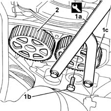
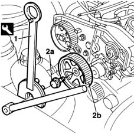

1032B40 toothed-driven pulley (one) - r + r with timing belt removed
- Path
- Procedures > 10 ENGINE UNIT > 1032 TIMING SYSTEM > 1032B belt timing system > 1032B40 toothed-driven pulley (one) - r + r with timing belt removed
- Kind
- repair procedure (removal / refitting; the operation number is the code)
- Applies to
- all engines; all production periods
- Interactive page
- https://sloeber94.github.io/elrnDB-fMltpl/en/#/2891222
Applies to: engines: 1.6 16v; all production periods
 Removing
Removing
 Refitting
Refitting1. Use tool (1a) to prevent the pulley turning, then unscrew retaining bolt (1b) and remove timing pulley (1c).
2. The exhaust camshaft pulley removal procedure is as described in the previous step.

Applies to: engines: 1.6 16v; all production periods
Refitting
RemovingFit the newly-removed pulley on the relevant camshaft.
Screw in the pulley retaining bolt without tightening.
Applies to: engines: 1.9 JTD 8V; all production periods
Removing
Refitting1. Use the tool to prevent the pulley from turning.
2. Unscrew retaining bolt (2a) and remove pulley (2b) from its seat on the camshaft.
 | Name | Country |
|---|---|---|
1 | Support for counter-torque | 1.860.831.000 |
| Name | Country |
|---|---|---|
1 | Counter-torque | 1.860.831.001 |

Applies to: engines: 1.9 JTD 8V; all production periods
Refitting
RemovingFit the pulley into its seat on the camshaft.
Screw in the bolt and then lock the pulley using the tool while tightening the bolt to torque.
| Name | Country |
|---|---|---|
- | Support for counter-torque | 1.860.831.000 |
| Name | Country |
|---|---|---|
- | Counter-torque | 1.860.831.001 |
 | Fastening | Component | Ø | Value (daNm) |
|---|---|---|---|---|
- | Bolt | TIMING GEAR DRIVEN PULLEYS | M12 | 12 |
Topics that link to this page (12)
- 1016B20 lh cylinder head extension - replace gasket
- 1016B22 lh cylinder head extension - r r with timing belt removed - replace gasket
- 1016B26 rh cylinder head extension -r r with timing belt removed -replace gasket
- 1016C10 cylinder head - r + r and replace gasket
- 1028H10 connecting rod and piston set - r r
- 1028H20 piston with connecting rod - r r
- 1032B52 toothed driven pulley (one) - r + r
- 1032B53 driven toothed pulley (one) - r r for versions with air conditioner
- 1036B10 overhead camshaft - r r on vehicle
- 1036G10 camshaft controlling exhaust valves in top head - r + r with top head removed - includes replacement of top head
- 1036G20 camshaft controlling intake valves in top head - r + r with top head removed - includes replacement of top head if necessary
- 1036G30 front oil seal of camshaft of one l/h or r/h top head - replace with timing belt removed